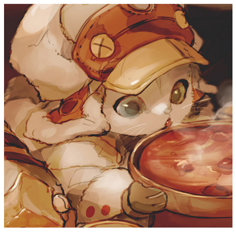

self-taught front-end dev
After suggestions of friends, I fell into programming. Starting with C# in Unity, and directly after, falling in love with programming. This career is a path plan to pursue for years to come.
I am constantly watching videos and reading articles and other materials related to programming. I always want to learn, constantly improving, and looking forward to the next thing.
I worked as a major motion picture compositor and repair man for many years before finding a fit with programming. Those years have taught me that every piece serves a greater picture and that even the tiniest problem can topple a great project. I always bring a laser focused attention to detail to any project, whether it be one line or 1000 lines of code.
Former compositor and Technician. I have color corrected, rotoscoped, repaired circuits, always putting a professional foot foward. Always looking to make any project excellent and clean, with ideas and details from outside the box.
Programming was suggested to me constantly, I would script with Python in compositing programs(Nuke, After Effects) but didn't think anything of it. Until 2 years ago where i finally took the plunge and learned C# in Unity. To which I found that I loved all aspects of a project, from completion or a period that breaks the whole thing. I always view it as solving a puzzle and there are always new puzzles to solve.